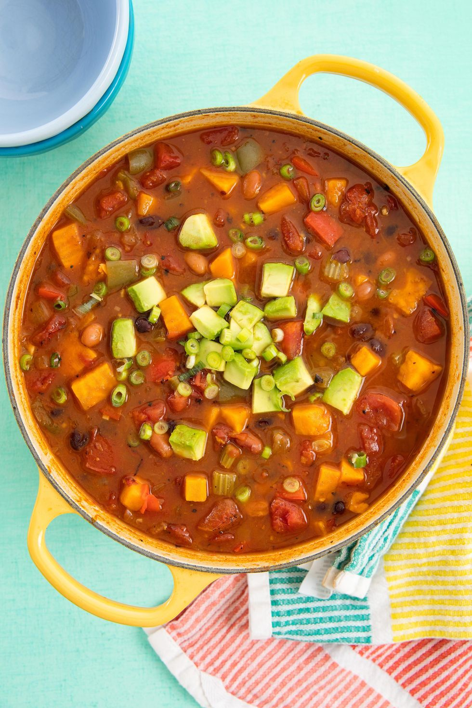

Amazing Plant-Based Dinner Recipe Below

Document
Description
With a chili this hearty and delicious, vegans and meat-eaters alike won't even miss the meat. Packed with sweet potatoes, two types of beans, fire roasted tomatoes and even a flavor-enhancing beer, this vegan chili more than makes up for what it's lacking in meat in the flavor department.
Serve this up for the coziest weeknight dinner (it makes for perfect leftovers), or as a crowd-pleaser at your Super Bowl party—no matter the occasion or your crew, this vegan and gluten-free chili is sure to satisfy.
Ingredients
- 1 tbsp. olive oil
- 2 bell peppers, diced
- 1 yellow onion, chopped
- 2 stalks celery, diced
- 3 cloves garlic, minced
- 2 tsp. chili powder
- 1 tsp. smoked paprika
- 1 tsp. cumin
- 1 tsp. dried oregano
- Kosher salt
- Freshly ground black pepper
- 1 (12-oz) bottle Mexican beer such as Modelo
- 1 large sweet potato, cut into 1/2" cubes
- 1 (15-oz) can black beans, drained and rinsed
- 1 (15-oz) can pinto beans, drained and rinsed
- 1 (28-oz) can diced fire-roasted tomatoes
- 2 c. vegetable broth
For Topping
- 1 avocado, sliced
- Lime wedges
- thinly sliced scallions
Instructions
- In a large pot, heat olive oil over medium heat. Add peppers, onions and celery and cook until softened, 3 to 4 minutes. Add garlic, chili powder, paprika, cumin, and oregano and sauté until fragrant, 1 to 2 minutes more. Season with salt and pepper.
- Add beer and cook until it has reduced by half, about 6 to 8 minutes, stirring occasionally. Add sweet potato, black and pinto beans, tomatoes and vegetable broth. Stir and bring to a boil, then reduce to a simmer and cook until slightly reduced and sweet potatoes are cooked through, around 20 minutes.
- Serve with the toppings of your choice.